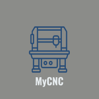

MyCNC - Home
What is an CNC
I was inspired to build my own Computer Numerical Control (CNC)machine, CNC is a technology that has revolutionized the manufacturing industry, allowing for precision and automation in the production of various components and products. A CNC machine is essentially a computer-controlled cutting machine that uses a pre-programmed sequence of instructions to guide the cutting tools to create the desired shape and size of a workpiece. CNC machines can be used for a wide range of applications, from metalworking and woodworking to 3D printing and laser cutting. By using CNC technology, manufacturers can achieve high levels of accuracy and consistency while reducing the need for manual labour, resulting in faster production times and lower costs.
My CNC
Overall, building your own CNC for woodworking requires extensive research and attention to detail. However, the information available online makes it possible for even those with limited experience to take on this exciting DIY project. The following steps guided me along the way to ensure I had a working model that best suited by needs: Planning, Research, Design, Sourcing and Building.